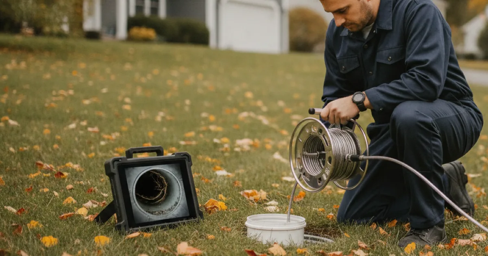

Reliable Drainage & Sewer Services in Westchester County, NY
From a single slow sink to a fully backed-up main line, Dan's Drains clears, inspects, and maintains the drains and sewer lines in your Westchester County home — and tells you honestly what caused the problem.
- Licensed & Insured
- Same-Day Service Available
- Upfront Pricing
- 15+ Years Local Experience

Need a plumber in Westchester County? We can usually help the same day.
What Our Drainage Services Cover
Drainage problems come in many sizes, and we handle the whole range. That includes routine clearing of slow and clogged drains, deeper cleaning with high-pressure water jetting for grease and roots, and diagnostic video camera inspections of your sewer line.
We also handle mechanical snaking and rooter service for stubborn blockages and, for commercial kitchens, scheduled grease trap cleaning. If your drain is slow, smelly, or backing up, we can find out why.
Signs Your Drains Need Attention
Drains rarely fail all at once. They warn you first. Watch for these signs:
- Water pooling around a shower drain or draining slowly after a bath.
- Gurgling sounds from a toilet or sink when another fixture is used.
- A bad smell coming up from a drain, especially in a basement.
- More than one fixture backing up at the same time — often a main-line problem.
- Clogs that keep coming back a week or two after you clear them.
Recurring clogs are the biggest tell. If the same drain keeps blocking, the real cause is usually further down the line where a plunger cannot reach.
Talk to a local Westchester County plumber today.
How We Clear and Inspect Drain Lines
We start by figuring out how far the problem goes. A single slow sink is different from several fixtures backing up at once. For a simple clog, snaking often does the job. For grease buildup or root intrusion, high-pressure jetting scours the pipe walls clean instead of just poking a hole through the blockage.
When a clog keeps returning or a main line is involved, a camera inspection lets us see the exact condition inside the pipe — a crack, a belly, or roots — so you are not paying to guess.
Drainage Challenges in Westchester County Homes
A lot of homes in this area have older clay or cast-iron sewer lines, and mature trees whose roots are drawn to the moisture inside them. Over the years, those roots work into pipe joints and catch everything that flows past, which is why root intrusion is one of the most common causes of a main-line backup here.
Finished basements are also common locally, and a drain backup there can do real damage. The EPA's guidance on household water use is a good reminder that what goes down the drain — grease, wipes, and so-called flushable products — is often what causes the clog in the first place.
When to Call a Pro for Drainage Help
A single slow drain is often something a homeowner can try to clear. But call us when more than one fixture backs up, when water comes up in an unexpected place like a floor drain, or when a clog keeps returning no matter what you do.
Those are signs of a main-line issue, and the sooner we look, the more options you have and the less risk of a messy backup. When you are ready, see the rest of the plumbing work we handle too.
Frequently Asked Questions
How do I know if it is a single clog or a main-line problem?
If just one fixture is slow, it is usually a local clog. If several fixtures back up at once, or water comes up in a tub or floor drain when you flush, that points to the main line — and that is worth a professional look.
Is hydro jetting or snaking better?
It depends. Snaking is great for a simple clog. Hydro jetting cleans the whole pipe wall and is better for grease buildup and roots. We recommend whichever actually fits your problem, not the pricier one by default.
Can you tell what is wrong without digging?
Often, yes. A sewer camera inspection lets us see inside the line and pinpoint a clog, crack, or root intrusion before anyone touches a shovel.
Why does my drain keep clogging in the same spot?
A repeat clog usually means buildup, a pipe defect, or roots further down the line. Clearing the surface clog does not fix the underlying cause, which is why it comes back. A camera inspection is the reliable way to find it.
Do you handle commercial drains too?
Yes. Along with home drainage, we clean grease traps and clear commercial kitchen lines for small businesses across Westchester County.
Ready to book? Reach Dan’s Drains for fast, upfront plumbing help.